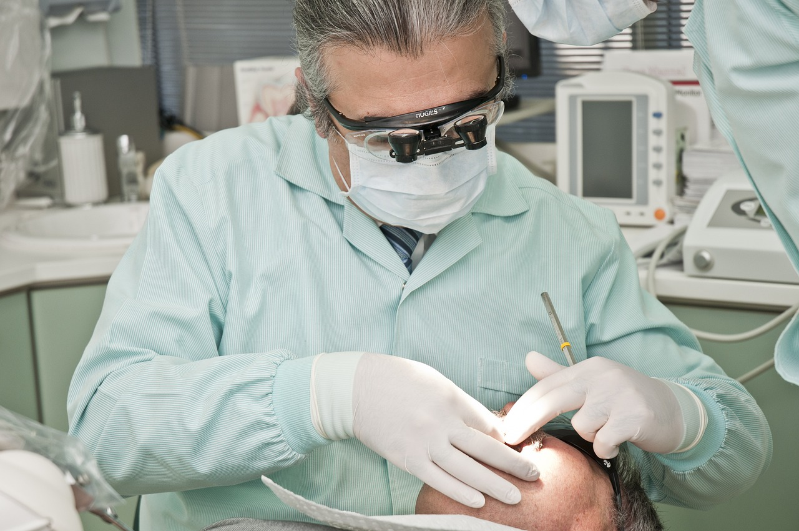
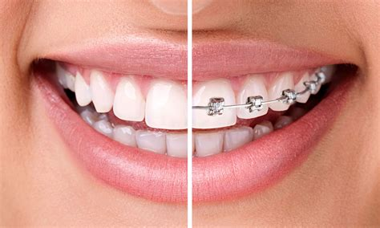
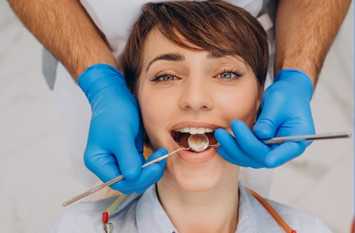

servicios

Dentista General

Ortodoncia

Periodoncia
Endodoncia
Estos proveedores de cuidado de la salud oral ayudan a tratar las distintas condiciones y partes de los dientes, encías, boca y mandíbula. Normalmente, un especialista dental ha completado formación y capacitación adicionales después de la facultad de odontología. Cada uno de estos especialistas desempeña un papel importante en tu salud dental y bienestar general.
Agendar Consulta